Față de ce?
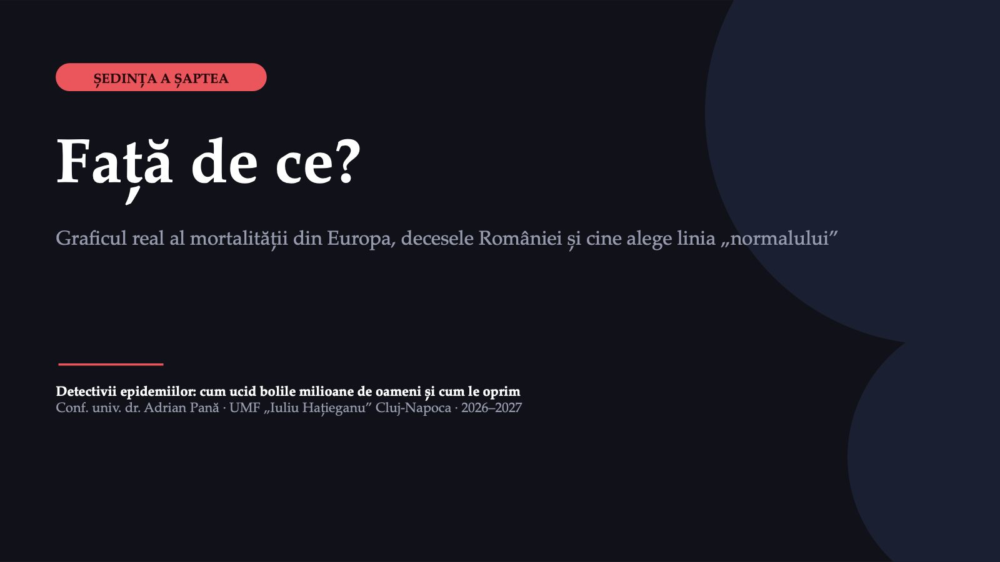
1 / 44Ultima ședință pornește de la date reale: graficul mortalității din Europa, publicat săptămâna trecută, și decesele României din ultimii ani.
„Au murit douăzeci de mii de oameni într-o lună.”
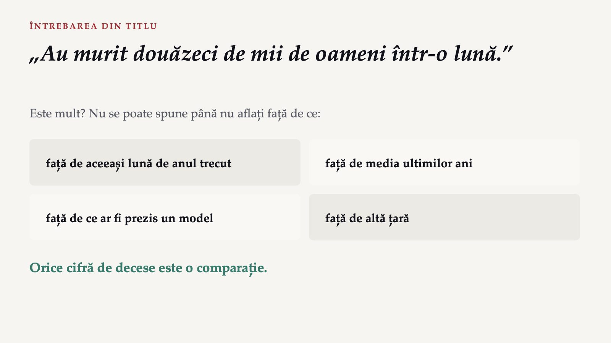
2 / 44O cifră de decese, singură, nu spune nimic. Douăzeci de mii de oameni într-o lună poate fi mult sau puțin: depinde cu ce o comparați.
„Obișnuit” nu cade din cer
3 / 44Răspunsul cinstit, de la început: o cifră de decese se compară cu numărul de decese așteptat într-o perioadă obișnuită. Iar „obișnuit” nu cade din cer: cineva hotărăște care ani, care săptămâni și ce ajustări intră în el.
Trei acte, trei voturi, apoi chestionarul
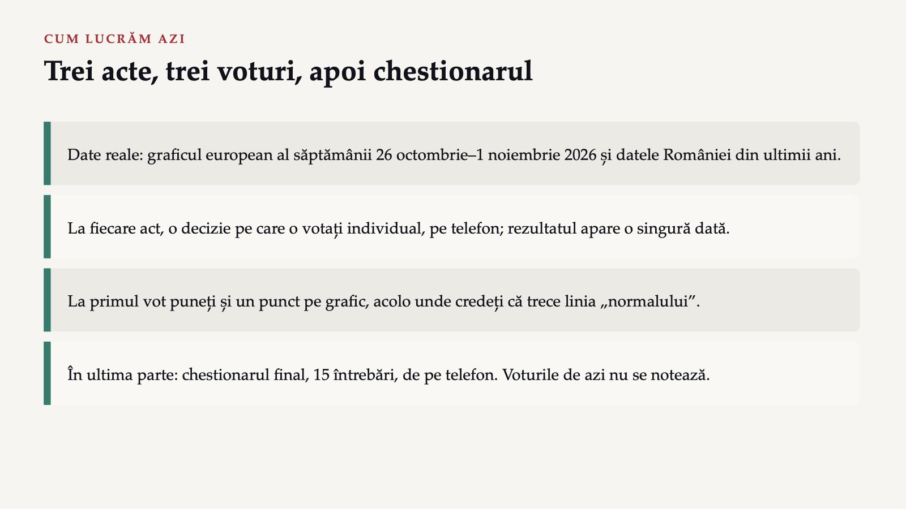
4 / 44Lucrăm pe date reale, în trei acte. La fiecare act votați individual, pe telefon. La primul vot puneți și un punct pe grafic. În ultima parte completați chestionarul final. Voturile de azi nu se notează: sunt pentru voi.
Toți trei răspund la „față de ce?”
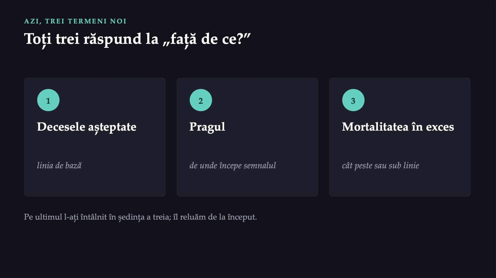
5 / 44Azi aveți trei termeni noi: decesele așteptate, adică linia de bază; pragul; mortalitatea în exces. Pe ultimul l-ați întâlnit în ședința a treia; îl reluăm de la început.
1
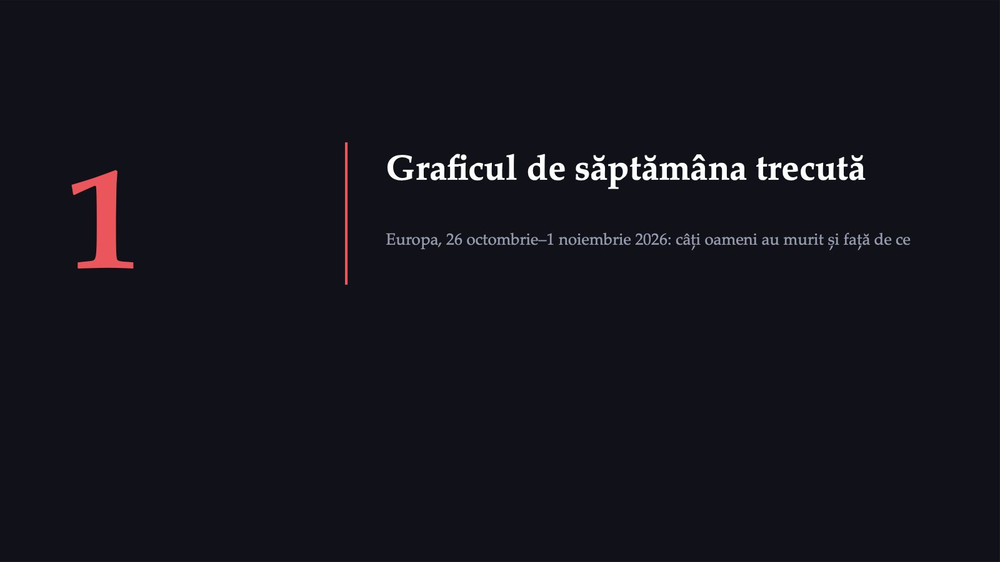
6 / 44Actul întâi: graficul european al mortalității din săptămâna trecută.
Un grafic real, actualizat în fiecare săptămână
![CAZUL · ACTUL ÎNTÂI Un grafic real, actualizat în fiecare săptămână Cazul nu este construit: graficul și datele sunt publicate de EuroMOMO. EuroMOMO: o rețea europeană care urmărește la timp decesele în exces legate de infecții sezoniere, vreme extremă și alte amenințări. Datele: statisticile naționale oficiale ale deceselor, trimise săptămânal; găzduită de Statens Serum Institut, sprijinită de ECDC și OMS. Un deces este un deces: din orice cauză, fără diagnostic, certificat sau test. Curba: suma ajustată a cifrelor țărilor; în săptămâna a 44-a, 25 de țări sau regiuni.](diapozitive/C07/007.jpg) 7 / 44
7 / 44Graficul de azi este real. Îl publică EuroMOMO, o rețea europeană care urmărește la timp decesele în exces. Graficul numără decesele din orice cauză. Un deces este un deces. Curba europeană este suma ajustată a cifrelor trimise de țări.
Curba urcă iarna și coboară vara
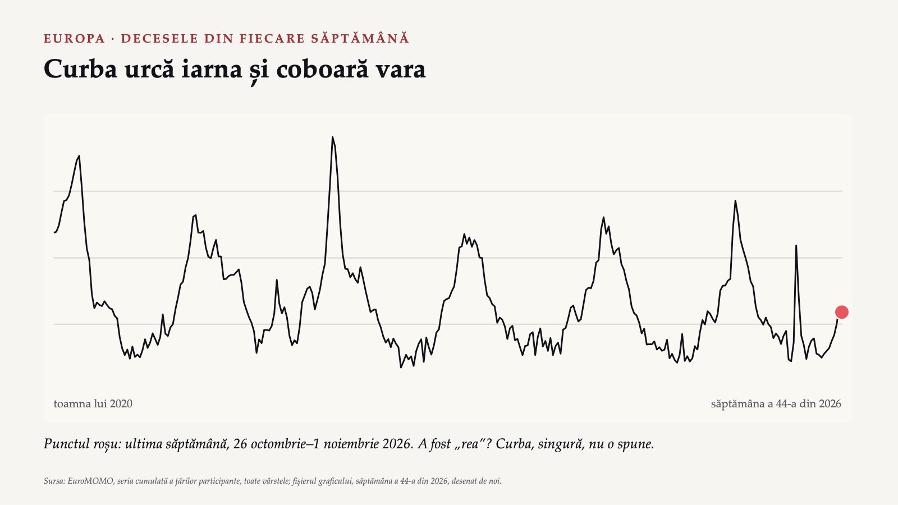
8 / 44Mortalitatea crește de obicei iarna, din cauza virusurilor respiratorii și a frigului, și poate crește vara, în valurile de căldură. Ultima săptămână de pe grafic este 26 octombrie–1 noiembrie 2026. O curbă, singură, nu vă spune dacă o săptămână a fost „rea”: trebuie o a doua linie.
Săptămâna trecută au murit în Europa mai mulți oameni decât era de așteptat?
9 / 44Prima decizie. Votați fiecare o singură variantă: săptămâna trecută au murit în Europa mai mulți oameni decât era de așteptat? Ultima săptămână de pe grafic este 26 octombrie–1 noiembrie 2026.
Unde ați trage linia deceselor așteptate pentru ultima săptămână?
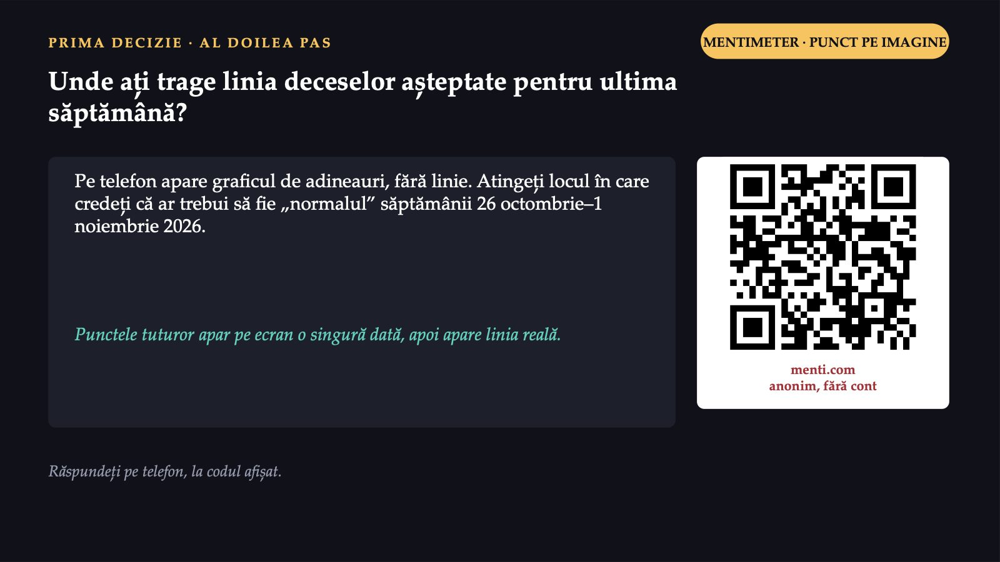
10 / 44Al doilea pas al primei decizii. Pe telefon vedeți graficul fără linie. Puneți un punct acolo unde ați trage linia deceselor așteptate pentru ultima săptămână.
Decesele observate, linia de bază, banda și pragul
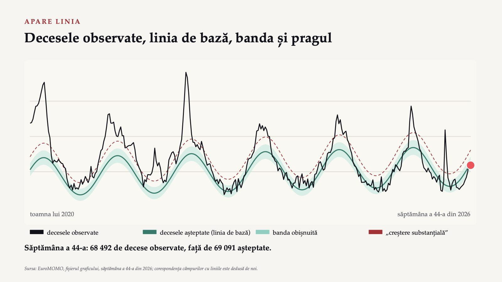
11 / 44Acum apare a doua linie: decesele așteptate. Lângă ea, banda umbrită, zona în care ar trebui să se afle mortalitatea în condiții obișnuite. Mai sus, linia de la care creșterea este considerată substanțială. În săptămâna a 44-a, 68 492 de decese observate, față de 69 091 așteptate.
Varianta (b): cam câți era de așteptat
 12 / 44
12 / 44Buletinul EuroMOMO al acelei săptămâni o spune direct: mortalitatea a fost la nivelurile așteptate, în toate grupele de vârstă. Au murit cu aproximativ 600 de oameni mai puțin decât era de așteptat, o diferență care a rămas în banda obișnuită.
Decesele așteptate (linia de bază)
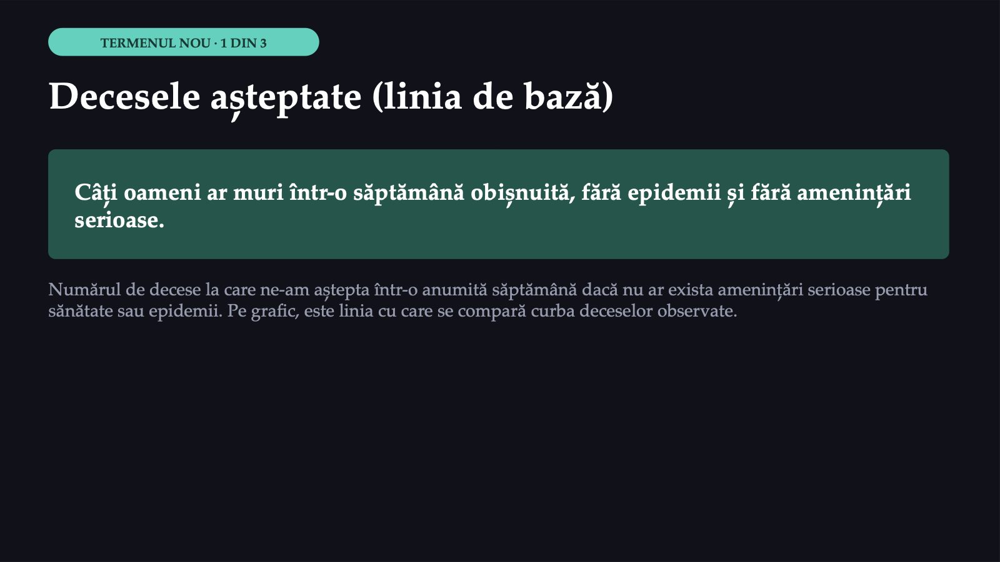
13 / 44Primul termen nou: decesele așteptate, adică linia de bază. Este numărul de decese la care ne-am aștepta într-o săptămână fără amenințări serioase pentru sănătate sau epidemii.
Nu o medie simplă: o tendință și un val
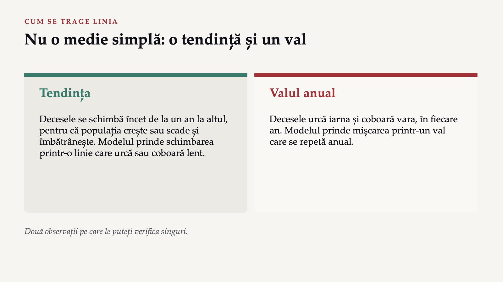
14 / 44Linia nu este o medie simplă a anilor trecuți. EuroMOMO folosește un model care prinde două lucruri: tendința lentă de la un an la altul, pentru că populația se schimbă, și valul care se repetă în fiecare an.
Linia învață numai din săptămânile liniștite
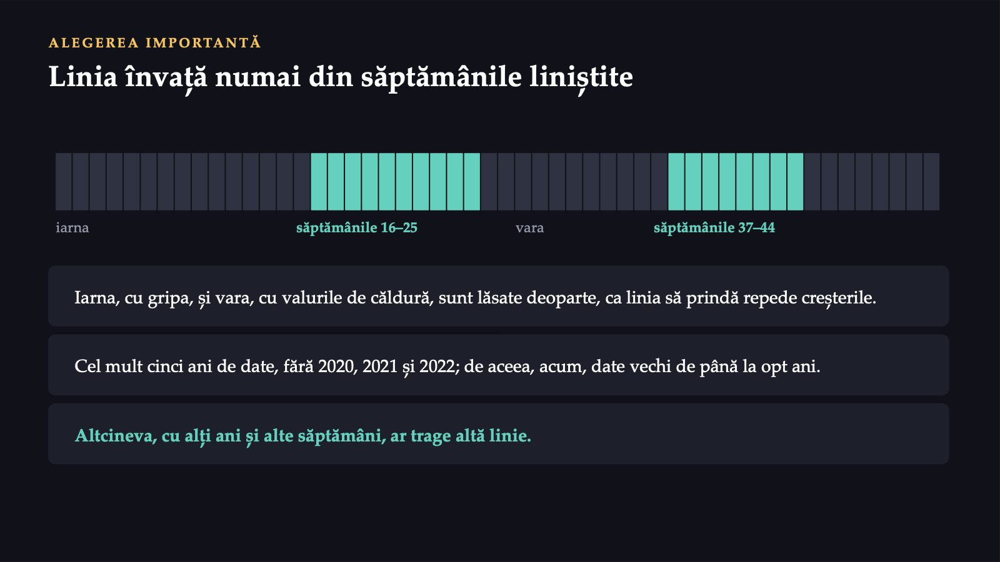
15 / 44Modelul învață numai din săptămânile în care mortalitatea crescută apare rar: primăvara și toamna. Iarna și vara sunt lăsate deoparte. Anii pandemiei sunt scoși. Rețineți ideea, nu modelul: linia de bază este o estimare construită din ani și săptămâni alese.
Pragul
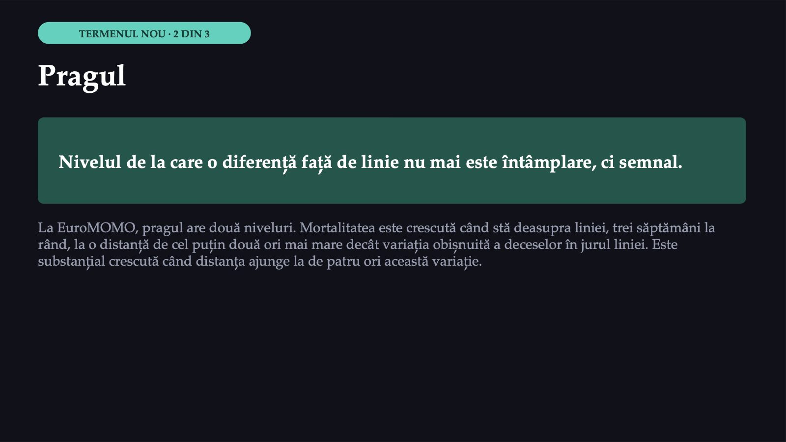
16 / 44Al doilea termen nou: pragul. Este nivelul de la care o diferență față de decesele așteptate nu mai este variație obișnuită, ci semnal. La EuroMOMO are două niveluri, de două ori și de patru ori variația obișnuită, trei săptămâni la rând.
Peste linie, dar nu un semnal
![DE APROAPE · ULTIMELE TREIZECI DE SĂPTĂMÂNI Peste linie, dar nu un semnal Banda zona în care se așteaptă decesele în condiții obișnuite; marginea de sus = primul nivel al pragului (dedus de noi) Săptămâna a 43-a aproximativ 1 100 peste linie, dar în bandă: nu un semnal Săptămâna a 44-a aproximativ 600 sub linie, tot în bandă Ca la o analiză de laborator: o valoare puțin în afara intervalului de referință nu este încă o boală. Sursa: EuroMOMO, fișierul graficului, săptămâna a 44-a din 2026, desenat de noi.](diapozitive/C07/017.jpg) 17 / 44
17 / 44Variația obișnuită înseamnă cât se abat decesele de la linie chiar și atunci când nu se întâmplă nimic deosebit. În săptămâna a 43-a, decesele au fost cu aproximativ 1 100 peste linie, dar au rămas în bandă: peste linie, dar nu un semnal. Pragul separă zgomotul de semnal.
Ultimele săptămâni sunt provizorii
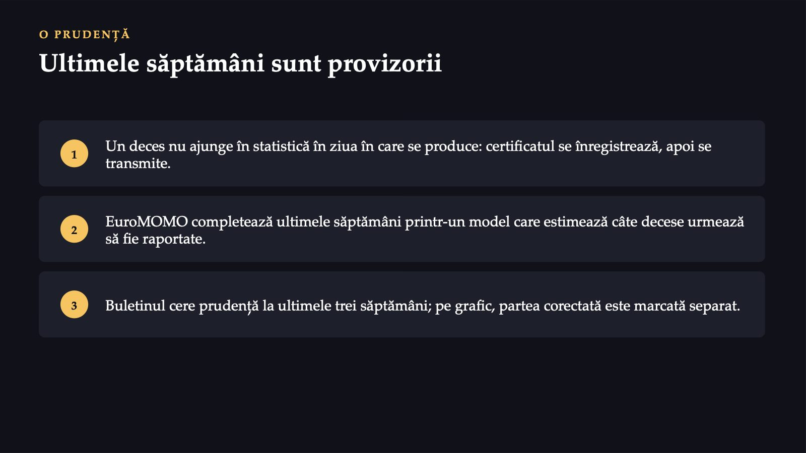
18 / 44Un deces nu ajunge în statistică în ziua în care se produce. De aceea ultimele săptămâni de pe grafic sunt incomplete, iar EuroMOMO le corectează printr-un model. Buletinul cere prudență la ultimele trei săptămâni.
Când auziți „au murit mai mulți ca de obicei”
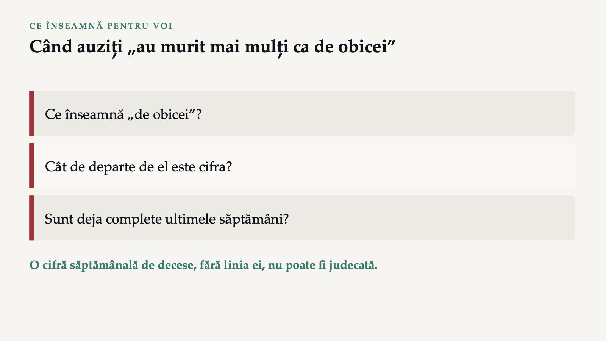
19 / 44O cifră săptămânală de decese, fără linia ei, nu poate fi judecată. Când auziți că au murit mai mulți oameni ca de obicei, întrebați trei lucruri.
2
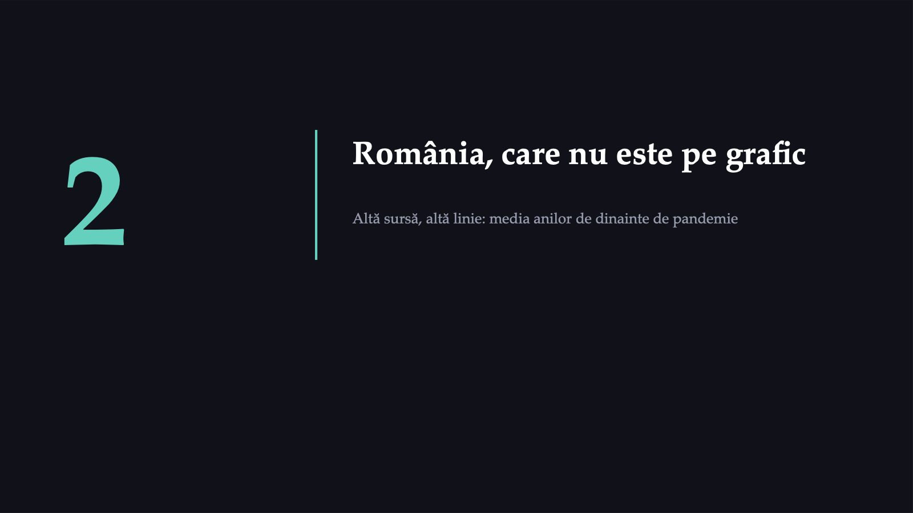
20 / 44Actul al doilea: România, care nu apare pe graficul european.
Căutați România pe graficul european
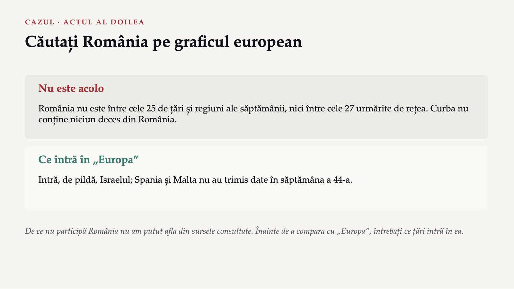
21 / 44România nu este pe graficul european. Prima lecție despre „față de ce”: o cifră europeană este suma ajustată a cifrelor țărilor care au avut date în acea săptămână. De ce nu participă România nu am putut afla din sursele consultate.
Altă linie: media anilor de dinainte
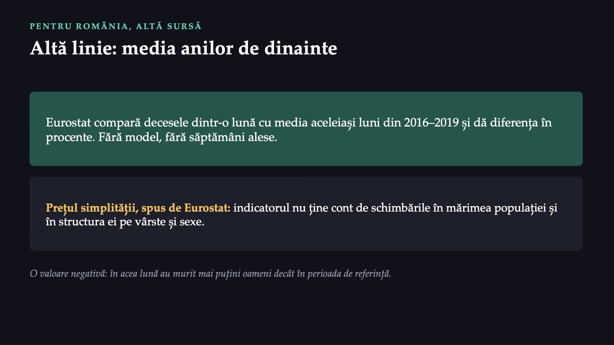
22 / 44Pentru România folosim Eurostat. Linia lui este mult mai simplă: media deceselor din aceeași lună în 2016–2019. Simplitatea are un preț, pe care Eurostat îl spune singur: nu ține cont de schimbările populației.
Cu cât au fost mai multe decesele din octombrie 2021 decât, în medie, în lunile octombrie din 2016–2019?
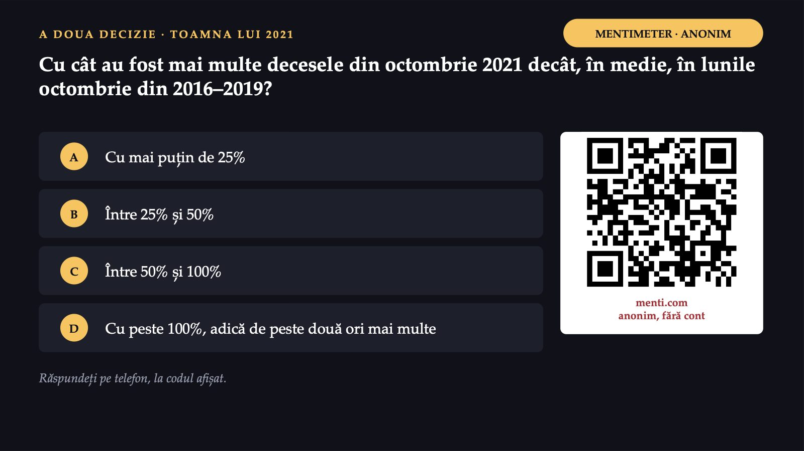
23 / 44Ați auzit de toamna lui 2021, când spitalele din România erau pline. Întrebarea nu este dacă a fost mult, ci cât de mult, față de ce. Votați fiecare o singură variantă.
Față de media aceleiași luni din 2016–2019
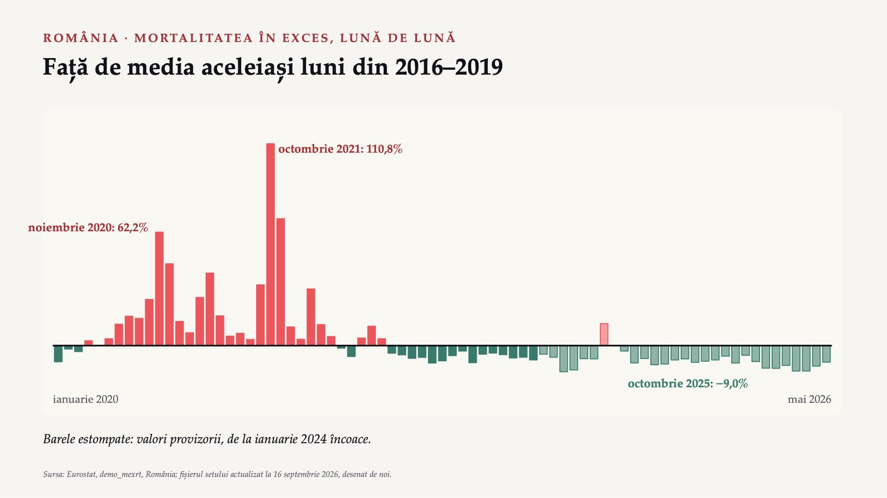
24 / 44Seria lunară a României, față de media aceleiași luni din 2016–2019. Primul vârf mare, în noiembrie 2020: 62,2%. Cel mai mare, în octombrie 2021: 110,8%. Din 2024, valorile sunt provizorii.
Varianta (d): cu peste 100%
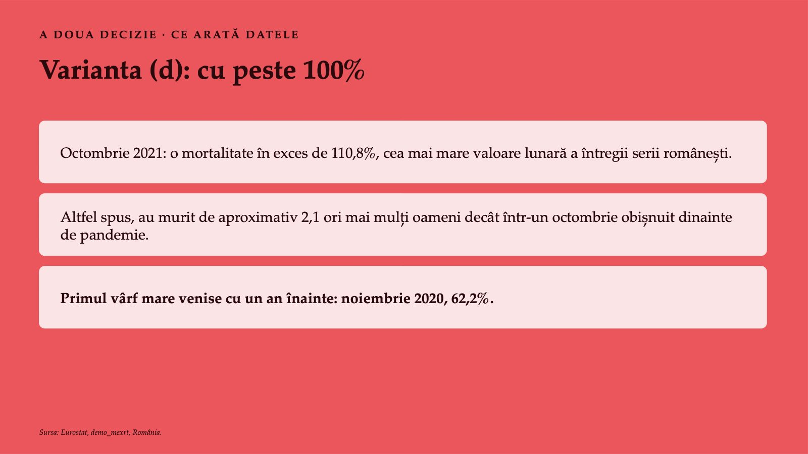
25 / 44Pentru octombrie 2021, Eurostat a publicat pentru România o mortalitate în exces de 110,8%, cea mai mare valoare lunară a seriei. Au murit de aproximativ 2,1 ori mai mulți oameni decât într-un octombrie obișnuit.
Octombrie 2021, pas cu pas
![CU CREIONUL · DATE REALE, CALCUL PROPRIU Octombrie 2021, pas cu pas 1 Adunați cele patru luni octombrie din 2016–2019: 22 143, 21 873, 22 911, 21 107; totalul este 88 034. 2 Împărțiți la patru: media unui octombrie obișnuit este 22 008,5. 3 Scădeți media din octombrie 2021: 46 662 minus 22 008,5 dau 24 653,5. 4 Împărțiți diferența la medie: 1,120, adică un exces de 112,0%. Eurostat publică 110,8%: cifrele lunare sunt fie primite de la țări, fie derivate din cele săptămânale. Când citați, spuneți care e care. Sursa: Eurostat, demo_mmonth, România; calcul propriu.](diapozitive/C07/026.jpg) 26 / 44
26 / 44Puteți reface calculul cu numerele deceselor pe luni. Media celor patru luni octombrie din 2016–2019 este 22 008,5; în octombrie 2021 au murit 46 662 de oameni, adică 112,0% peste medie. Eurostat publică 110,8%, pentru că nu pornește întotdeauna de la aceleași cifre lunare.
11 641
![LUNA ASCUNDE VÂRFUL O săptămână din octombrie 2021 11 641 decese în săptămâna 18–24 octombrie 2021, cea mai grea de la începutul seriei, în 2015 129,8% peste media aceleiași săptămâni din 2016–2019, de 5 066 de decese Aproximativ 1 663 de decese pe zi, timp de o săptămână. Luna adună săptămâna de vârf cu săptămâni mai puțin grele, iar media lor coboară procentul. Aceeași epidemie, pe săptămână sau pe lună: două cifre diferite, amândouă corecte. Sursa: Eurostat, demo_r_mwk_ts, România; calcul propriu.](diapozitive/C07/027.jpg) 27 / 44
27 / 44Luna ascunde vârful. Cea mai grea săptămână din seria românească, de la începutul ei în 2015, a fost 18–24 octombrie 2021: 11 641 de decese, aproximativ 1 663 pe zi. Aceeași epidemie, pe săptămână sau pe lună, dă două cifre diferite, amândouă corecte.
Mortalitatea în exces
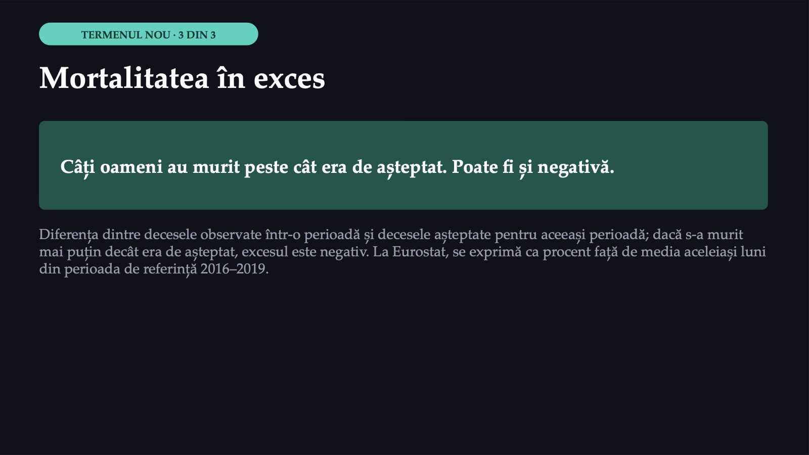
28 / 44Al treilea termen nou: mortalitatea în exces. Este diferența dintre decesele observate și cele așteptate pentru aceeași perioadă. Poate fi și negativă.
Excesul nu spune de ce s-a murit
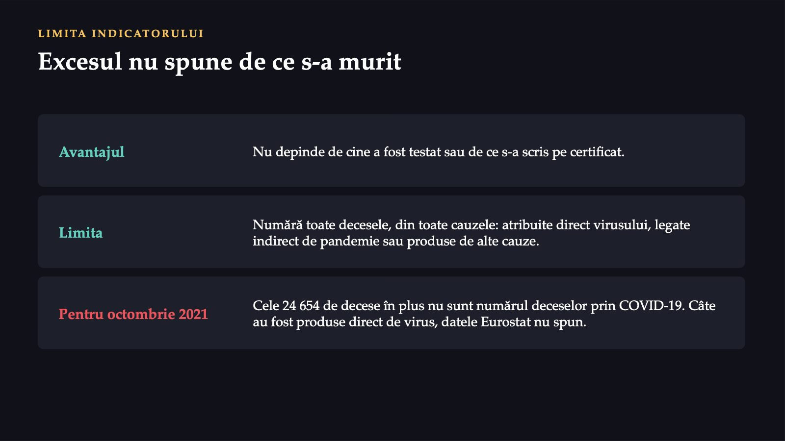
29 / 44Avantajul indicatorului este că nu depinde de cine a fost testat. Limita lui este la fel de importantă: numără toate decesele, din toate cauzele. Cele 24 654 de decese în plus din octombrie 2021 nu sunt numărul deceselor prin COVID-19.
O imagine inversă: excesul negativ
 30 / 44
30 / 44Dacă urmăriți aceeași serie până azi, vedeți o imagine inversă: în ultimii ani, în România au murit mai puțini oameni decât în media perioadei de referință. Un exces negativ nu este, singur, nici o veste bună, nici una rea. Înainte să judecați o cifră, întrebați din ce ani vine linia și dacă populația s-a schimbat de atunci.
Zece minute
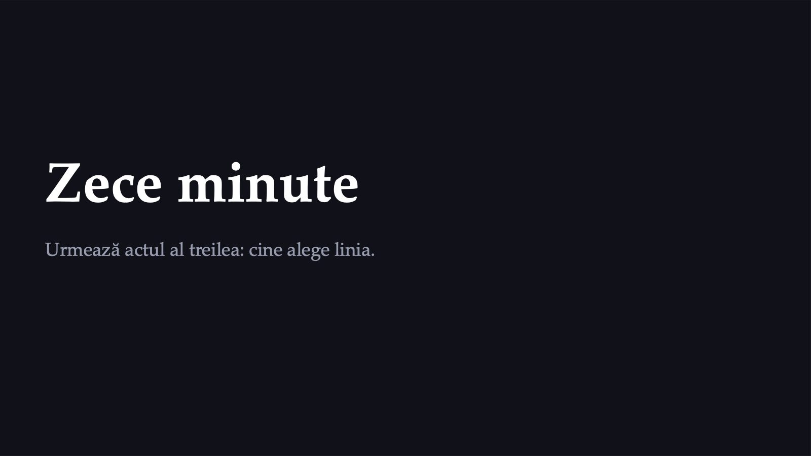
31 / 44Zece minute. Urmează actul al treilea.
3
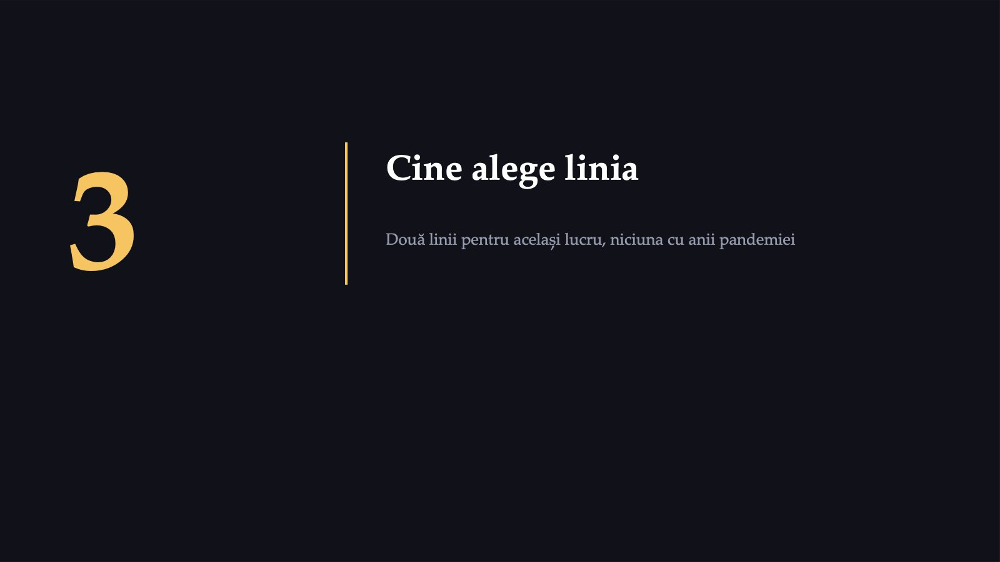
32 / 44Actul al treilea: cine alege linia.
Două linii, niciuna cu anii pandemiei
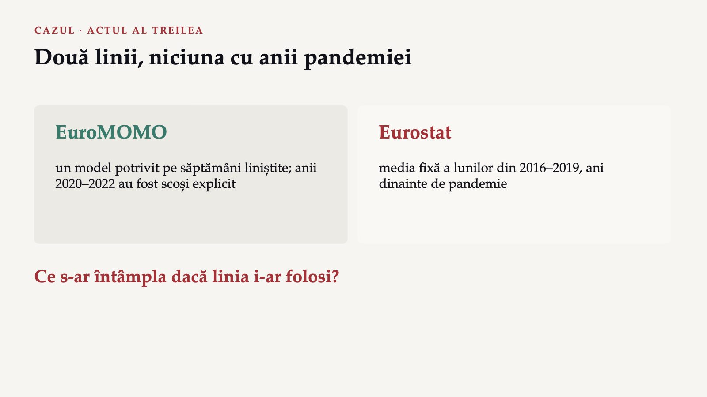
33 / 44Ați văzut două linii pentru același lucru. Niciuna nu folosește anii pandemiei: EuroMOMO i-a scos explicit, iar linia Eurostat este media unor ani dinainte de pandemie. Merită să vedeți ce s-ar întâmpla dacă i-ar folosi.
Dacă linia de așteptat ar include și anii pandemiei, excesul de azi ar ieși mai mare, mai mic sau la fel?
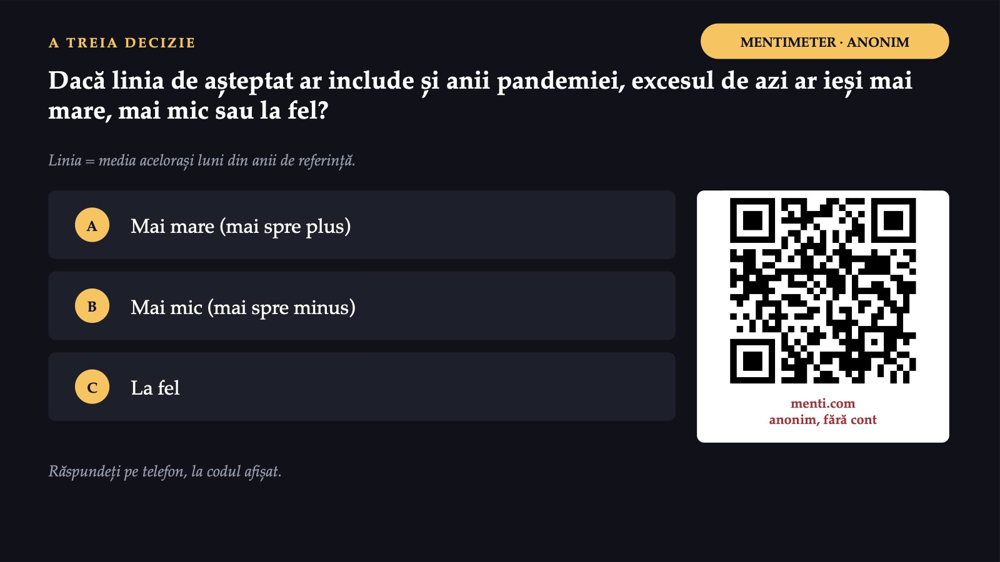
34 / 44A treia decizie. Linia este media acelorași luni din anii de referință. Dacă ar include și anii pandemiei, excesul de azi ar ieși mai mare, mai mic sau la fel? Votați fiecare o singură variantă.
Varianta (b): mai mic, pentru linia-medie
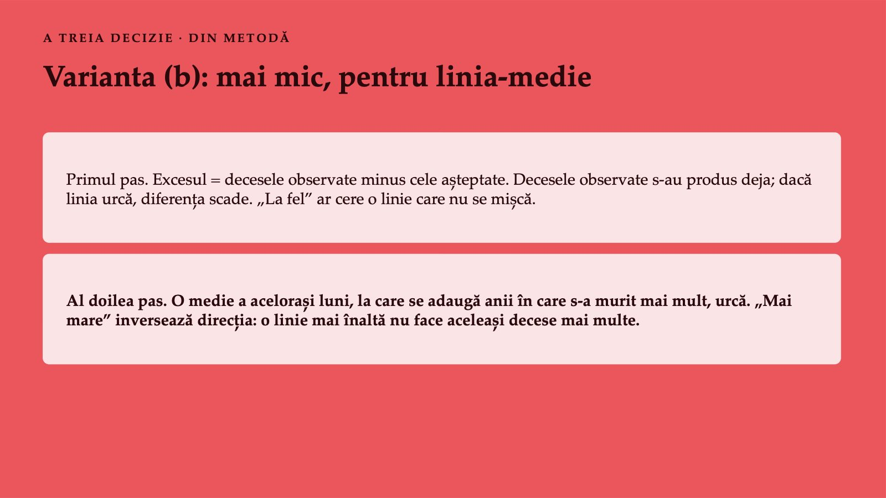
35 / 44Raționamentul are doi pași. Excesul este diferența dintre decesele observate și cele așteptate, iar decesele observate s-au produs deja. O linie care este media acelorași luni urcă dacă primește anii în care s-a murit mai mult. Dacă linia urcă, excesul scade.
7,1%
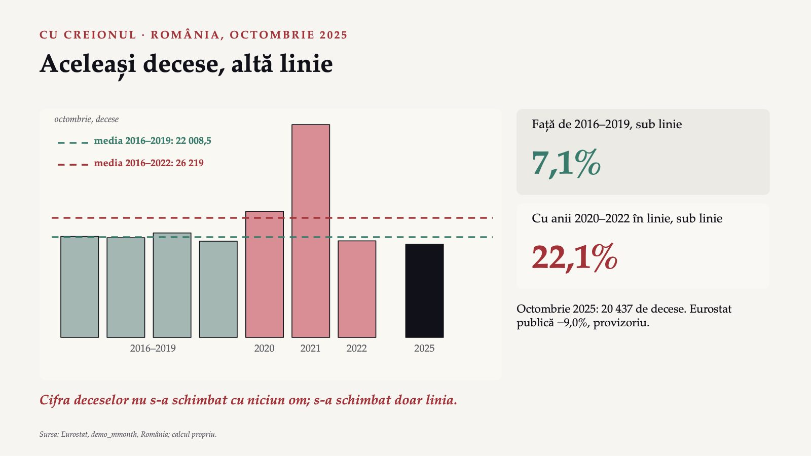
36 / 44Pentru România, exemplul se face cu creionul. În octombrie 2025 au murit 20 437 de oameni, cu 7,1% mai puțin decât media lunilor octombrie din 2016–2019. Dacă în linie ar intra și anii 2020, 2021 și 2022, media ar urca la 26 219, iar aceeași lună ar apărea cu 22,1% sub linie. Cifra deceselor nu s-a schimbat cu niciun om; s-a schimbat doar linia.
Nu la fel de simplu
![PENTRU LINIA EUROMOMO Nu la fel de simplu Ce știm Anii pandemiei au fost peste linia actuală: în săptămânile de potrivire, 2 863 de decese în plus pe săptămână în 2021 și 3 771 în 2022 (calcul pe datele graficului). Ce spune rețeaua Scoate anii 2020–2022 „pentru a evita distorsiunea”; nu spune în ce sens ar mișca ei linia. Raționamentul nostru Linia are tendință: efectul depinde de anii din fereastră. De aceea votul s-a rezolvat pe linia-medie. Costul alegerii, spus deschis de rețea: linia se sprijină pe date de până la opt ani.](diapozitive/C07/037.jpg) 37 / 44
37 / 44Pentru linia EuroMOMO, răspunsul nu se citește la fel de simplu. Anii pandemiei au fost peste linia actuală, dar rețeaua nu spune în ce sens i-ar mișca linia. Linia ei este un model cu tendință, iar la un asemenea model efectul depinde de anii care intră în fereastră.
Patru întrebări pentru orice cifră de exces
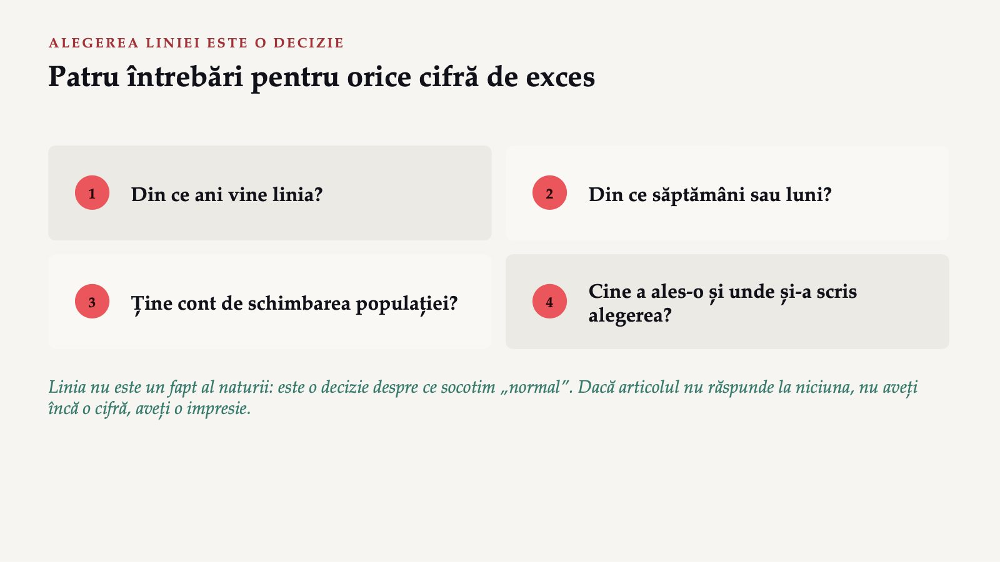
38 / 44Linia nu este un fapt al naturii. Este o decizie despre ce socotim „normal”, luată de cineva, cu un motiv, și scrisă undeva. Când citiți o cifră de mortalitate în exces, puneți aceste patru întrebări.
Întrebarea decide linia, nu invers
![DOUĂ LINII, FAȚĂ ÎN FAȚĂ Întrebarea decide linia, nu invers EuroMOMO Eurostat Ce compară decesele fiecărei săptămâni decesele fiecărei luni Cum se trage linia model cu tendință și val anual media aceleiași luni Anii folosiți cel mult cinci, fără 2020–2022 2016–2019, fix Perioadele din an săptămânile 16–25 și 37–44 toate lunile Răspunde la „este săptămâna aceasta neobișnuită?” „cât s-a murit față de anii dinainte?” Sursa: EuroMOMO, pagina de metodă; Eurostat, metadatele indicatorului mortalității în exces.](diapozitive/C07/039.jpg) 39 / 44
39 / 44Niciuna dintre linii nu este „cea adevărată”. Linia EuroMOMO răspunde mai bine la întrebarea dacă o săptămână este neobișnuită. Linia Eurostat răspunde mai simplu la întrebarea cât s-a murit față de anii dinainte de pandemie. Întrebarea decide linia, nu invers.
Cinci idei
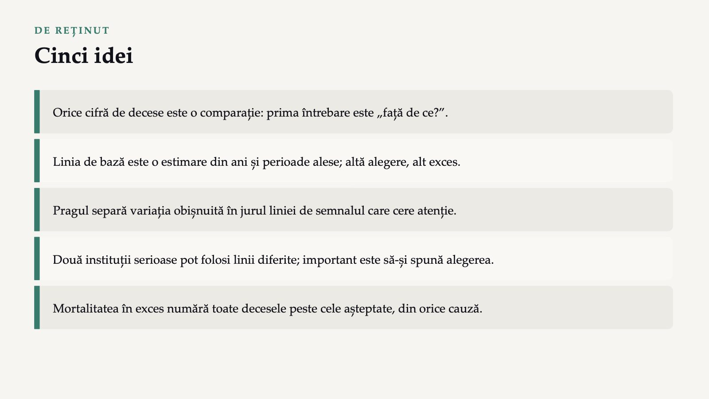
40 / 44Cinci idei de reținut din ședința de azi.
Fiecare caz a fost un „față de ce?”
 41 / 44
41 / 44Titlul acestei ultime ședințe nu este nou. Fiecare dintre primele șase ședințe a pus întrebarea „față de ce?”, formulată altfel. Este și o recapitulare pentru chestionarul final.
Ce faceți diferit de mâine
![ÎNAPOI LA GRAFICUL DE SĂPTĂMÂNA TRECUTĂ Ce faceți diferit de mâine 1 În fața unei cifre de decese, întrebați față de ce este comparată, înainte să întrebați dacă este mare. 2 Pe un grafic al mortalității, căutați linia de bază și banda obișnuită; fără ele, nu judecați. 3 La „exces de mortalitate”, întrebați din ce ani vine linia și dacă populația s-a schimbat. 4 Când comparați România cu „Europa”, verificați ce țări intră în „Europa”. 5 Când veți raporta un indicator al secției, scrieți și linia cu care l-ați comparat. Fiecare cifră pe care o veți citi ca medici are, ascunsă undeva, o linie. Căutați-o.](diapozitive/C07/042.jpg) 42 / 44
42 / 44Graficul de săptămâna trecută s-a putut citi numai cu linia lui. Când veți fi medici, veți citi zilnic cifre: o rată de infecții în spital, un număr de internări, o mortalitate pe secție. Fiecare va avea, ascunsă undeva, o linie. Căutați-o.
Biletul de ieșire
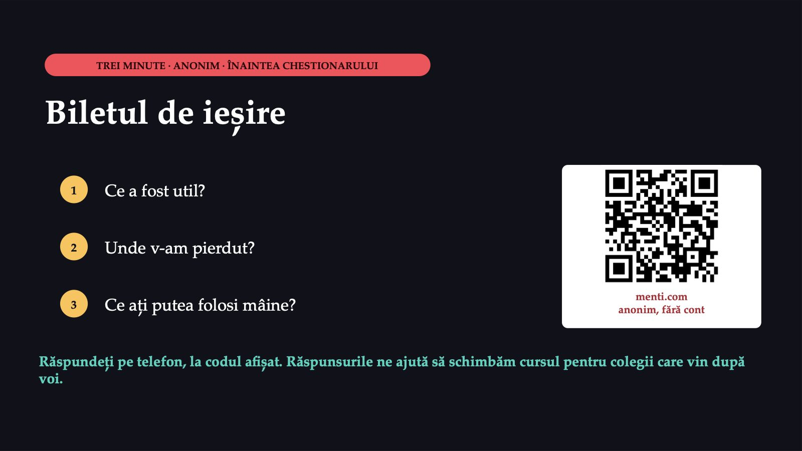
43 / 44Trei întrebări anonime, pe telefon, înaintea chestionarului final.
Chestionarul final
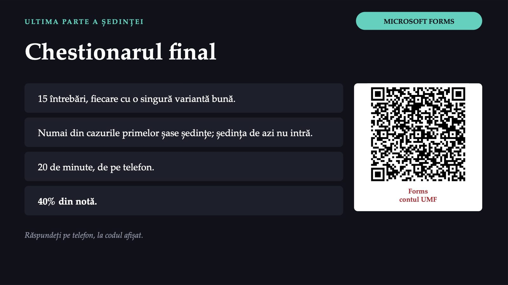
44 / 44În ultima parte a ședinței completați chestionarul final, de 15 întrebări, fiecare cu o singură variantă bună, de pe telefon. Întrebările sunt numai din cazurile primelor șase ședințe. Chestionarul reprezintă 40% din notă.
Săgeți sau spațiu: navigare · O: vedere de ansamblu · N: notele prezentatorului · F: ecran complet · Esc: închidere